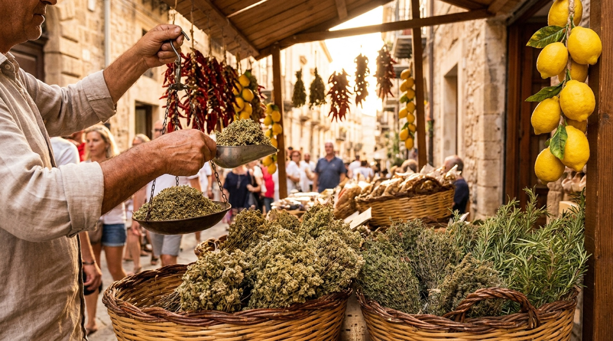
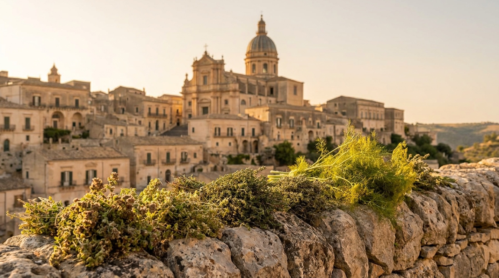
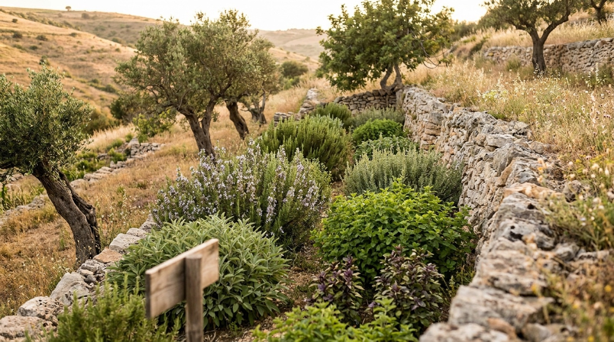
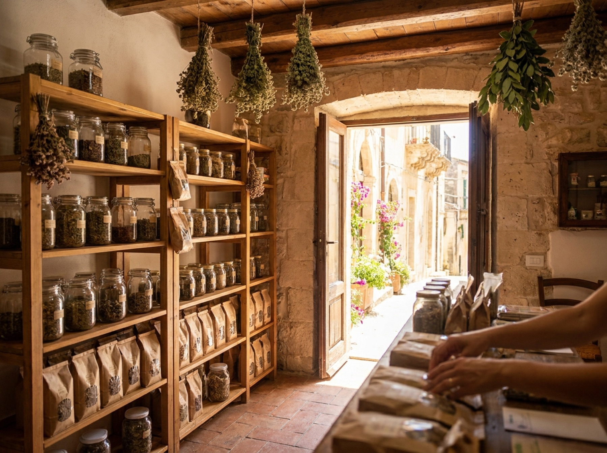

Oregano-Ernte in den Iblei
Wann der wilde Oregano blüht, warum wir ihn nur in der Mittagshitze schneiden und wie er bei uns im Schatten trocknet – unser erster Beitrag ist in Arbeit.

Wilde Bergkräuter, Tees und Gewürze aus den Monti Iblei – gesammelt, getrocknet und abgefüllt in unserem Familiengeschäft in Ragusa Ibla.
Zum ShopEin kleiner Teil unserer Kräuter wächst auf unserem eigenen Feld in den Hügeln der Iblei, zwischen alten Johannisbrot- und Olivenbäumen.


Die Monti Iblei sind ein Kalksteinplateau im Südosten Siziliens: Schluchten, Trockenmauern, Johannisbrotbäume und im Frühling ein Teppich aus wildem Thymian und Oregano. Von hier stammen unsere Kräuter.
Wir sammeln wild, kaufen von kleinen Höfen der Umgebung und bauen einen Teil selbst an. Alles wird schonend im Schatten getrocknet und von Hand abgefüllt.
Hier erscheinen bald Bewertungen unserer Kundinnen und Kunden.
Platz für die erste Kundenstimme.
PlatzhalterPlatz für die zweite Kundenstimme.
PlatzhalterPlatz für die dritte Kundenstimme.
Platzhalter
Wann der wilde Oregano blüht, warum wir ihn nur in der Mittagshitze schneiden und wie er bei uns im Schatten trocknet – unser erster Beitrag ist in Arbeit.